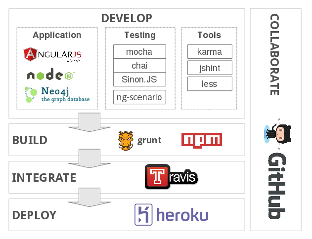
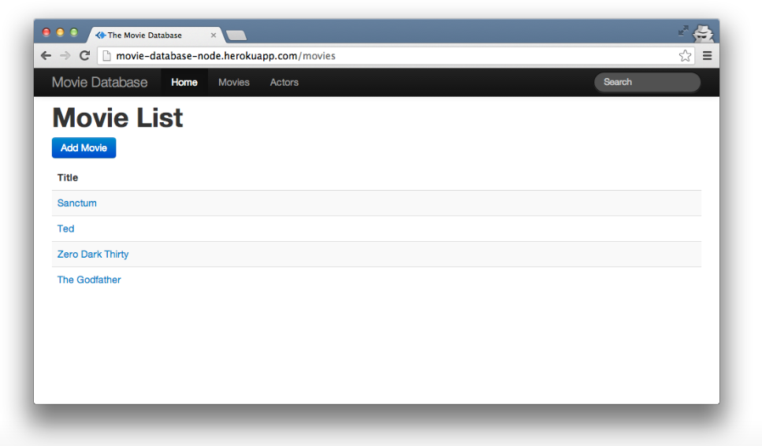

Agile JavaScript a codecentric AG workshop
If you are reading this, then you are probably here because one of the trainers has given you this URI. If not, then most of this information may not be of interest to you. Should you be interested in this workshop, please contact our training team (workshop is available in German and English).
Slides
-

Introduction
Who we are, what we do, what the workshop is about ...
-

Frameworks, Tools and Services
Short overview and explanation of the frameworks, tools and services, that we use during the workshop. Start here, if you want to know, how a typical tool stack for agile software development with JavaScript can look like ...
-

JavaScript Basics
Introduction to JavaScript, basic features and common pitfalls. Start here, if you are new to JavaScript or want to learn more about the language of the workshop ...
-

About the Movie Database
Presentation of the demo-project, that is used throughout the workshop ...
Source Code
All the project's sources are available through a GitHub repository under codecentric/movie-database-node. Workshop participants will be given a fork of this repository with pull and push rights.
Preparation
- Please form teams of four to five persons (four persons preferred).
- Make sure that every one of you has created a GitHub account. Creating an account is easy and free of charge. You can create an account through the GitHub homepage.
- Once you have formed teams and every team member has created a GitHub account, please inform us about your teams. Send us one message per team to agilejs@codecentric.de containing the names of all the persons that are part of your team, the GitHub user names of all team members and, if you are up to it, a fancy team name!
- Follow the installation instructions below when you find some spare time (you should have done this before the workshop!). Every team member needs a complete development environment.
Installation of necessary software
Make sure that every team member has a PC/Mac that can be used for development. Unix based operating systems work best in our experience, but Windows can also be used. If you are willing to, then you can install the necessary software on your own machine. Being able to run the software outside of any virtual machine is superb and will result in the best experience for you during the workshop. For those who are unable to install the software or are not willing to, we provide an Ubuntu-based virtual machine that can be run using Oracle VirtualBox.
Native installation
Providing installation instructions for all the tools is out of scope for this document. Most of the necessary tools feature an excellent documentation that you can refer to should you run into any issues. In case of any outstanding issues, please contact us by mail through agilejs@codecentric.de.
Please make sure that the following tools are installed:
- Java version 6 or later (preferably Oracle JDK or Open JDK 7)
- git (the version control system)
- Node.JS version 10 and NPM (node package manager). On OS X and Linux you should use NVM (Node Version Manager) which allows you to install global modules without super user privileges. To install NVM you need to have git and cURL installed.
-
Once NPM is installed, you will need to globally install the Grunt
command line interface. You can do so by running
npm install -g grunt-cli. Depending on your setup, you might need to prependsudoto get the necessary privileges. - PhantomJS to execute the tests
- Neo4j as this is the database that we are using. Installation normally only requires an extraction of the downloaded archive.
- Some code editor that supports HTML, CSS and JavaScript. We recommend either Sublime Text or WebStorm.
- At last, you will need a relatively new web browser. Chromium derivatives like Google Chrome, Chrome Canary or Chromium itself would be our choice.
Using the Virtual Machine
Make sure that you have Oracle VirtualBox installed. With VirtualBox Version 4.X (where X is larger than 1) you should not run into any issues. Once installed you can start VirtualBox and import the virtual machine using File -> Import Appliance. Follow the wizard till the end and start the virtual machine. You should now be good to go!
Workshop Material
So now you have installed all necessary software, you have cloned the movie-database repository and you want to start hacking! Here are some information, you might find useful.
-
Quickstart Guide
The fastest way to get you working on the movie-database. Explanation of the most important grunt-task
grunt dev... -
Tasks and User Stories
The tasks for the workshop. Starting from some easy ones to make you familiar with AngularJS and NodeJS, up to completely new features like Twitter integration.
-
Documentation
Documentation of the movie-database internals and the available grunt-tasks.
-
Useful Links
A list of links to tutorials and reference documentation of the frameworks used in the movie-database project ...
Trainers
-
Michael Lex
-
Ben Ripkens